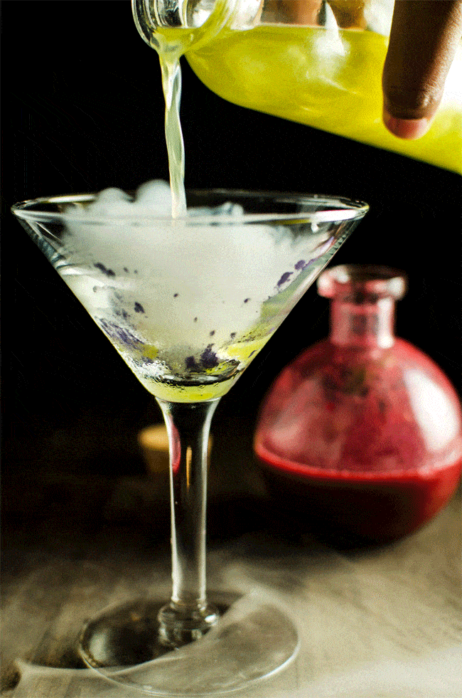
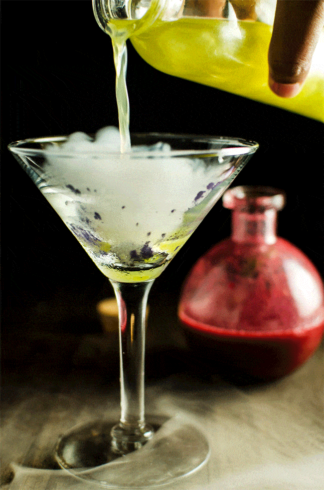

Elkészítése:
1. Válassza ki a koktélhoz használni kívánt italtípust.
2. Adjon hozzá más típusú alkoholt, hogy javítsa a szeszes ital ízét, ha szükséges.
3. Vegyél egy jó koktél shakert.
4. Használjon edényt vagy mérőpoharat.
5. Ha szükséges, először keverje össze a gyümölcsöt vagy a fűszernövényeket a koktél shakerben.
6. Adja hozzá a gyümölcsleveket, alkoholokat és likőröket a koktél shakerbe.
7. A folyadékok hozzáadása után tedd a jégbe .
8. Zárja le a koktél shaker kupakját, és erőteljesen rázza fel.
9. Szűrje le az italt a megfelelő edénybe.
10. Adjon hozzá keserűt az italához, ha szükséges.
11. Zárd körettel az italodhoz.
 
